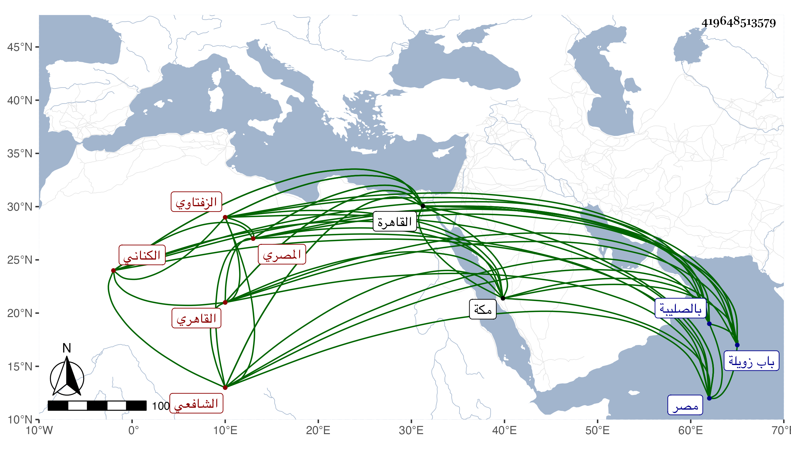

0902Sakhawi.DawLamic.ITO20230111-ara1.EIS1600.419648513579
Biography ID: 419648513579
230
أحمد بن محمد بن أحمد بن عبد المحسن بن محمد الشهاب الكناني الزفتاوي المصري ثم القاهري الشافعي أخو علي الآتي . ولد تقريبا سنة ثلاث أو أربع وسبعين وسبعمائة وقتل سنة سبعين بمصر ونشأ بها فقرأ القرآن والحاوي والمنهاج الأصلي وألفية ابن مالك وقال أنه أخذ الفقه بقراءته عن أبيه والشمس بن القطان والبدر القويسني والنور الأدمي والأبناسي وابن الملقن والبلقيني ، وعن ابن القطان والصدر الأنشيطي والعز بن جماعة أخذ الأصول وعن العز اشياء من العقليات وعن والده والشمس القليوبي وناصر الدين داود بن منكلي بغا النحو وسمع الحديث على التنوخي والعراقي والهيثمي والأبناسي والمطرز والنجم البالسي وناصر الدين بن الفرات والشرف القدسي في آخرين . وأجاز له جماعة وحج مرارا وناب في الحكم عن الصدر المناوي فمن بعده . واختص بشيخنا لكونه بلديه وحصل فتح الباري وجلس بجامع الصالح خارج باب زويلة وقتا ثم بالصليبة وغيرهما . وكتب في التوقيع الجكمي كثيرا وحدث بالقاهرة ومكة وغيرهما سمع منه الفضلاء ، حملت عنه أشياء وكان خيرا ساكنا جامدا محبا في الحديث وأهله وقال فيما كتبه بخطه أن جده التقي البياني . مات في يوم الثلاثاء خامس ربيع الأول سنة إحدى وستين بصليبة القاهرة رحمه الله وإيانا .
